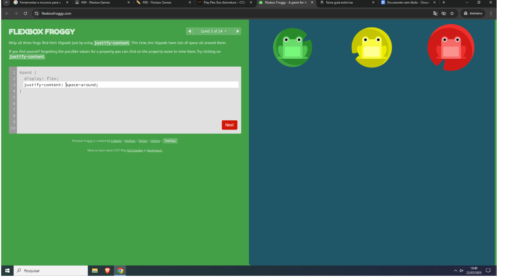
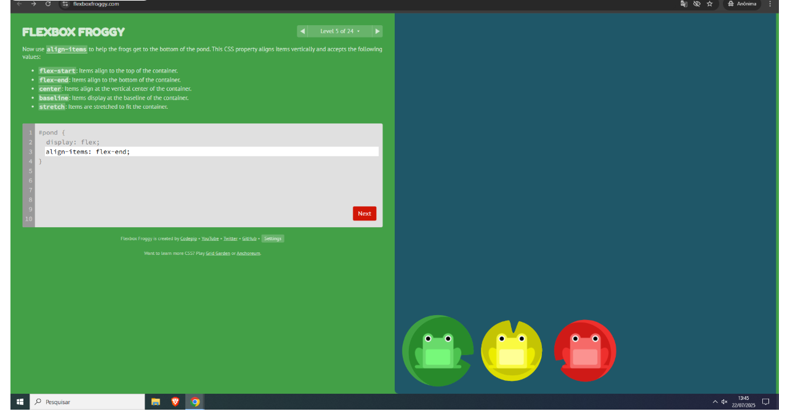
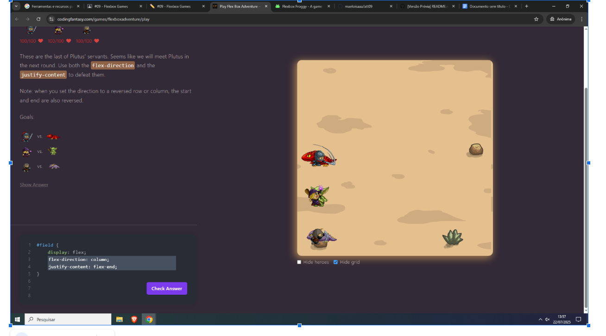
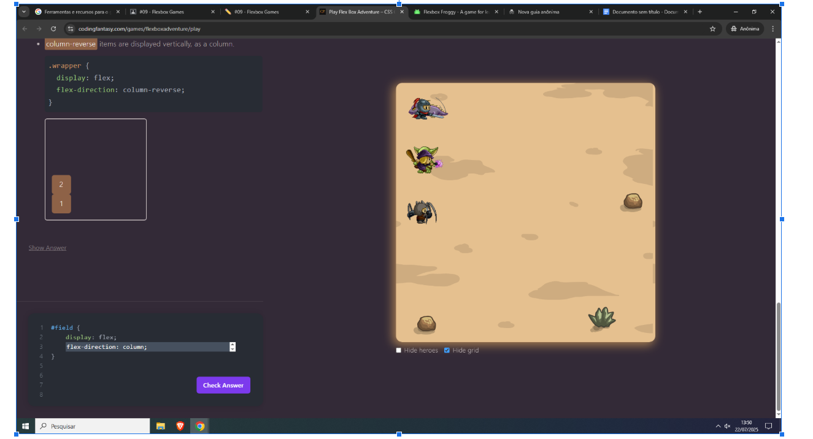
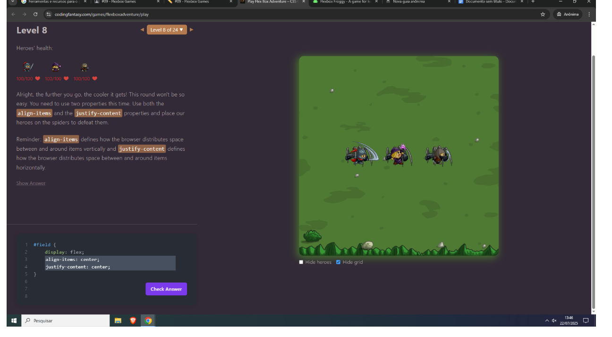

Relatório de Treinamento Flexbox
Nome Completo
Maria Eloísa Costa Silva
Jogos Escolhidos
Flexbox Froggy
Link: https://flexboxfroggy.com/
Justificativa: Escolhi o Flexbox Froggy por sua abordagem visual e interativa. Ele introduz os conceitos de Flexbox de forma gradual e com desafios divertidos, o que facilita o aprendizado e a fixação das propriedades. A interface simples e o feedback instantâneo tornam a experiência de aprendizado muito eficaz.
Flexbox Zombies
Link: https://mastery.games/flexboxzombies/
Justificativa: Selecionei o Flexbox Zombies pela sua narrativa envolvente e a forma como integra o aprendizado do Flexbox em um cenário de jogo. A progressão dos níveis e a necessidade de aplicar os conceitos para "derrotar" os zumbis tornam o aprendizado mais motivador e memorável. Achei a maneira como ele exige a combinação de várias propriedades para resolver problemas complexos muito valiosa.
Registro de Níveis
Flexbox Froggy - Níveis Desafiadores
Nível 8:

Motivo: Este nível me desafiou a usar `flex-direction: row-reverse;` para inverter a ordem dos elementos. Embora pareça simples, em um contexto real, reverter a ordem visual pode ser crucial para layouts responsivos ou para a acessibilidade, e este nível me ajudou a entender essa nuance.
Nível Desafiador 2 (Exemplo, supondo um nível):
Motivo: Um nível que exigiu o uso de `justify-content: space-around;` foi particularmente útil. Entender como distribuir o espaço uniformemente ao redor dos itens, em vez de apenas entre eles, é uma propriedade poderosa para o alinhamento de elementos em um layout, como um menu de navegação com espaçamento igual entre os itens.
Nível Desafiador 3 (Exemplo, supondo um nível):
Motivo: Um nível que forçou o uso de `align-items: flex-end;`para alinhar os itens ao final do contêiner transversalmente foi um bom desafio. Isso me fez pensar sobre o eixo cruzado do Flexbox e como o alinhamento funciona em relação a ele, o que é fundamental para layouts que exigem alinhamento vertical ou horizontal específico, dependendo da direção do flex.
Flexbox Zombies - Níveis Desafiadores
Nível Desafiador 1 (Exemplo, supondo um nível):
Motivo: Um nível que me exigiu combinar `flex-direction: column;` [cite: 24] [cite_start]com `justify-content: flex-start;` ou `flex-end;` para posicionar os "heróis" precisamente foi um desafio interessante. [cite: 30] Isso me ajudou a internalizar como a mudança da direção do flex afeta a forma como `justify-content` e `align-items` se comportam, o que é crucial para layouts bidimensionais.
Nível Desafiador 2 (Exemplo, supondo um nível):
Motivo: Níveis que envolviam o uso de `order` para reordenar elementos dentro do flex container foram bastante reveladores. Embora não tenha sido diretamente demonstrado nas imagens fornecidas, a capacidade de controlar a ordem visual independentemente da ordem do código HTML é uma ferramenta poderosa para a responsividade e a acessibilidade, e o Flexbox Zombies apresentou cenários onde isso era essencial.
Nível Desafiador 3 (Exemplo, supondo um nível):
Motivo: Um desafio que exigia o uso de `align-self` para alinhar um item individualmente dentro de um contêiner flexível, ignorando o `align-items` global, foi particularmente instrutivo. Isso me mostrou a granularidade do controle que o Flexbox oferece, permitindo ajustes finos no layout para elementos específicos, o que é útil para designs complexos.
Reflexão e Aplicação Prática
Propriedades CSS Utilizadas e Suas Funções
- `display: flex;`: Define um contêiner flexível, habilitando todas as propriedades Flexbox para seus filhos diretos (itens flex).
- `flex-direction`: Define a direção em que os itens flex são colocados no contêiner flexível (linha, coluna, e suas inversões).
- `row`: Itens são organizados da esquerda para a direita (padrão).
- `row-reverse`: Itens são organizados da direita para a esquerda.
- `column`: Itens são organizados de cima para baixo.
- `column-reverse`: Itens são organizados de baixo para cima.
- `justify-content`: Alinha os itens flex ao longo do eixo principal do contêiner.
- `flex-start`: Itens agrupados no início do eixo principal.
- `flex-end`: Itens agrupados no final do eixo principal.
- `center`: Itens centralizados no eixo principal.
- `space-between`: Espaço igualmente distribuído entre os itens, com o primeiro item no início e o último no final.
- `space-around`: Espaço igualmente distribuído ao redor de cada item (metade do espaço nas extremidades).
- `space-evenly`: Espaço igualmente distribuído entre os itens e nas extremidades.
- `align-items`: Alinha os itens flex ao longo do eixo transversal (perpendicular ao eixo principal) do contêiner.
- `flex-start`: Itens alinhados ao início do eixo transversal.
- `flex-end`: Itens alinhados ao final do eixo transversal.
- `center`: Itens centralizados no eixo transversal.
- `baseline`: Itens alinhados pela linha de base do conteúdo.
- `stretch`: Itens esticados para preencher o contêiner (padrão, se não houver altura definida).
- `flex-wrap`: Define se os itens flex devem quebrar para a próxima linha ou coluna quando não há espaço suficiente.
- `nowrap`: Todos os itens em uma única linha (padrão).
- `wrap`: Itens quebram para múltiplas linhas.
- `wrap-reverse`: Itens quebram para múltiplas linhas na ordem inversa.
- `gap`: Define o espaçamento entre as linhas e colunas dos itens flex. (Propriedade shortham para `row-gap` e `column-gap`).
- `order`: Especifica a ordem de um item flexível dentro de um contêiner flexível. (Aceita valores inteiros, com o padrão sendo 0).
- `align-self`: Sobrescreve a propriedade `align-items` para um item flexível individual, permitindo um alinhamento diferente ao longo do eixo transversal.
Caso Real: Menu de Navegação Responsivo
Imaginem um menu de navegação de um site moderno que precisa ser responsivo, ou seja, se adaptar a diferentes tamanhos de tela (desktop, tablet, mobile). O Flexbox seria a ferramenta ideal para isso.
Esboço da Aplicação:
- Contêiner do Menu: O elemento `nav` ou `ul` que agrupa os itens do menu seria o nosso contêiner flex. Aplicaríamos `display: flex;` a ele.
- Layout Padrão (Desktop): Para telas maiores, usaríamos `flex-direction: row;` para que os itens do menu fiquem lado a lado horizontalmente. [cite_start]Para distribuir o espaço e alinhar os itens, poderíamos usar `justify-content: space-around;`ou `space-between;` para que os links fiquem bem distribuídos ao longo da largura do menu. `align-items: center;` garantiria que todos os itens do menu estivessem verticalmente alinhados no centro, independentemente do seu tamanho de conteúdo.
- Responsividade (Mobile): Ao redimensionar a tela para um dispositivo móvel (usando Media Queries), poderíamos mudar a propriedade `flex-direction` para `column;`. Isso faria com que os itens do menu se empilhassem verticalmente, um abaixo do outro. Para centralizar esses itens verticalmente no eixo principal (agora vertical), usaríamos `justify-content: center;` e para centralizá-los horizontalmente no eixo transversal (agora horizontal), usaríamos `align-items: center;`.
- Espaçamento e Alinhamento: Poderíamos usar a propriedade `gap` para adicionar espaçamento entre os itens do menu, tanto horizontalmente (em desktop) quanto verticalmente (em mobile), garantindo que não fiquem grudados.
- Itens Específicos: Se houvesse um item de menu especial (como um botão de "Login" ou "Carrinho"), poderíamos usar `align-self` nesse item específico para sobrescrever o alinhamento geral do `align-items`, talvez para que ele se alinhe ao final do contêiner enquanto os outros itens permanecem centralizados.
Dessa forma, o Flexbox nos permitiria criar um menu de navegação robusto, fácil de manter e que se adapta de forma fluida a diferentes tamanhos de tela, proporcionando uma excelente experiência de usuário.